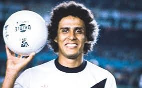
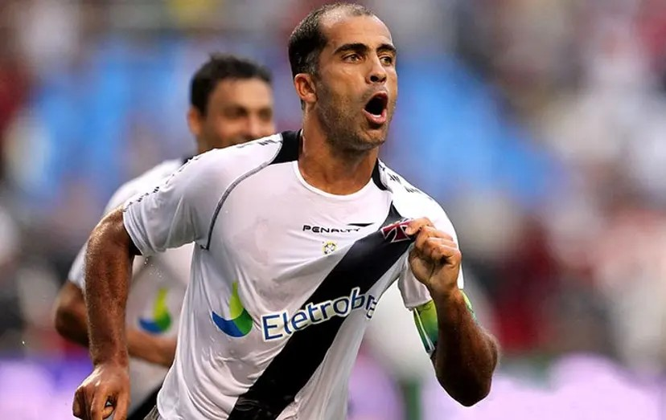
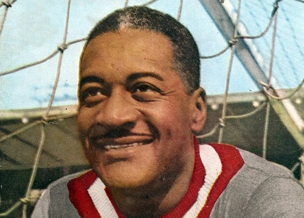
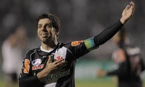
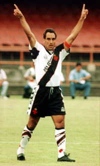
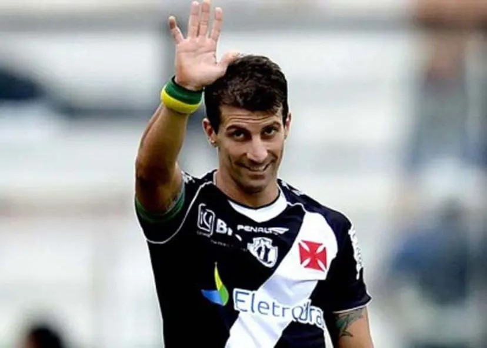

Roberto Dinamite foi um dos maiores ídolos do Vasco da Gama e do futebol brasileiro, reconhecido por sua habilidade como artilheiro e sua carreira marcada por gols e paixão pelo clube carioca, onde se tornou o maior goleador da história.

Felipe é um ex-jogador de futebol brasileiro, reconhecido por sua técnica apurada e criatividade em campo, que se destacou principalmente durante sua passagem pelo Vasco da Gama, onde conquistou títulos importantes e se tornou um ídolo da torcida.

Barbosa foi um goleiro icônico do Vasco da Gama, lembrado por suas habilidades defensivas e por ser um dos principais jogadores da seleção brasileira na Copa do Mundo de 1950, onde, apesar da derrota, se tornou uma figura emblemática da história do futebol brasileiro.

Juninho Pernambucano é um ex-jogador brasileiro de futebol conhecido por sua habilidade excepcional em cobranças de falta, precisão e liderança, especialmente marcante durante sua passagem pelo Lyon, onde se tornou um dos maiores ídolos do clube francês.

Edmundo, conhecido como "Animal", é um ex-jogador de futebol brasileiro que se destacou como atacante pelo Vasco da Gama, onde se tornou ídolo da torcida por sua habilidade, garra e faro de gol, além de ter uma carreira marcada por polêmicas e um estilo de jogo explosivo.

Se tem jogo do Vascão, pra Barreira logo eu vou
Vai ferver o caldeirão, os ingressos já esgotou
Com o Pirata é tiro certo, foi o Payet que falou
Que o cria tá vindo aí, o Pedrinho já confirmou
Que o Coutinho voltou querendo demais
Anota mais três pontinho na conta do pai
A Barreira vai virar baile (ahn-ahn-ahn)
A Barreira vai virar baile (ahn-ahn-ahn)
A Barreira vai virar baile (ahn-ahn-ahn)